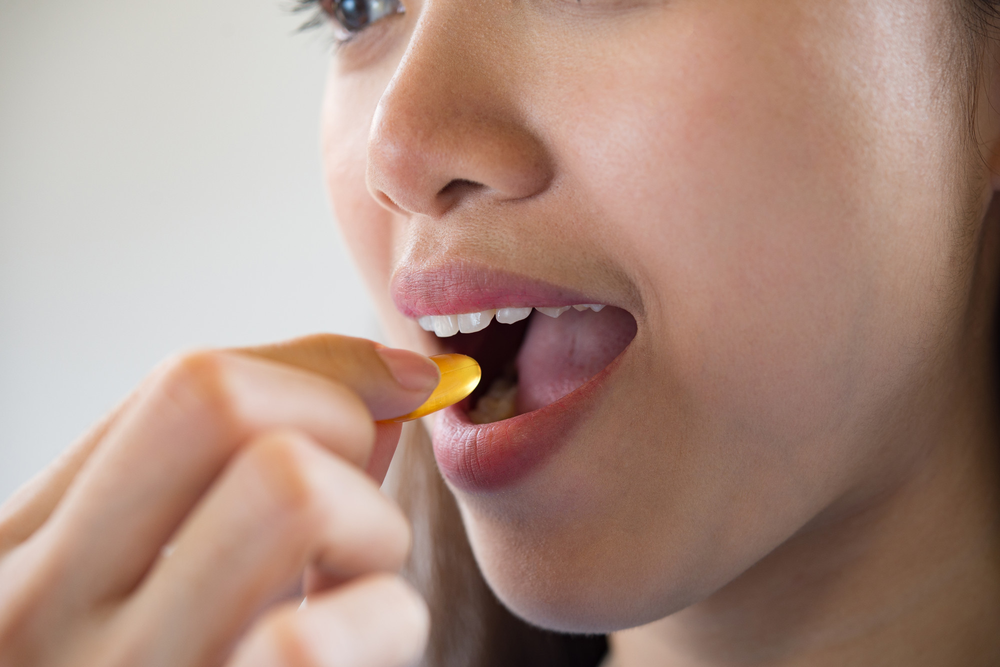

বাংলাদেশের পরিবেশিত গর্ভধারণের পূর্বপ্রস্তুতিকে ডেলিভারিপর্যন্ত
গর্ভধারণ একটি বিশেষ সময় যা একজন মহিলার শারীরিক, মানসিক এবং সামাজিক জীবনে বিশেষ পরিবর্তন আনে। এই গাইডলাইনে বাংলাদেশে প্রক্রিয়াগর্ভধারণের প্রস্তুতি, গর্ভধারণের সময়কাল, এবং ডেলিভারি পরবর্তী বিশেষ বিষয়সমূহের আলোচনা করা হবে।
প্রস্তুতি ও পরিকল্পনা (Preconception and Planning)
গর্ভধারণের উপযুক্ত বয়স: বিশদ আলোচনা
গর্ভধারণের বয়স একজন মহিলার শারীরিক এবং মানসিক স্বাস্থ্যের উপর প্রভাব ফেলে। কম বয়সের গর্ভধারণের ক্ষেত্রে স্বাস্থ্য ঝুঁকি বেশি হতে পারে।
- স্বাস্থ্যঝুঁকি: কম বয়সে গর্ভধারণে ঝুঁকিপূর্ণ।
- শিশুর স্বাস্থ্য: শিশু এবং মায়ের সুস্বাস্থ্য নিশ্চিত করা গুরুত্বপূর্ণ।
স্বাস্থ্য পরীক্ষা ও পরামর্শ:

- গর্ভধারণের আগে নারীর স্বাস্থ্য পরীক্ষা করা প্রয়োজন। এতে ডায়াবেটিস, রক্তচাপ, থাইরয়েড সমস্যা ইত্যাদি চিহ্নিত করা যায়।
- মায়েদের প্রয়োজনীয় পুষ্টি ও খাদ্যাভ্যাস নিশ্চিত করা হয়।
- প্রতি দুই সপ্তাহে একবার চিকিৎসকের পরামর্শ নেওয়া।
- ফোলা পা, মাথাব্যথা, বা উচ্চ রক্তচাপ হলে সতর্ক থাকতে হবে।
- গর্ভধারণের সময় ঠিক করতে চিকিৎসকের সাথে আলোচনা।
- পূর্ববর্তী গর্ভধারণে কোনো জটিলতা থাকলে সেই বিষয়েও সঠিক চিকিৎসা নেওয়া।
ফলিক এসিড ও ভিটামিন গ্রহণঃ
- ফলিক এসিড গর্ভধারণের অন্তত তিন মাস আগে শুরু করা হয়। এটি শিশুর স্নায়ুতন্ত্রের গঠন সঠিক রাখতে সাহায্য করে।
- গর্ভধারণের আগে ফলিক এসিড সাপ্লিমেন্ট নেওয়া গুরুত্বপূর্ণ, কারণ এটি নবজাতকের নিউরাল টিউব ডিফেক্ট প্রতিরোধ করে।
- আয়রন ও অন্যান্য ভিটামিনের ঘাটতি থাকলে তা পূরণ করা হয়।
গর্ভাবস্থার সময়সীমা (Antenatal Care)
প্রথম ত্রৈমাসিক (০-৩ মাস):
প্রাথমিক চেকআপ:
- প্রেগনেন্সি কনফার্মেশন টেস্ট ও আল্ট্রাসনোগ্রাম ।
- হিমোগ্লোবিন, ব্লাড সুগার, ইউরিন পরীক্ষা।
ওষুধ ও পুষ্টি:
- আয়রন ও ক্যালসিয়াম ট্যাবলেট শুরু।
- উচ্চ-প্রোটিন খাবার (ডিম, মাছ, মাংস, দুধ)।
বিপদের লক্ষণ:
- রক্তপাত, মাথা ঘোরা, বা তীব্র বমির মতো লক্ষণ হলে দ্রুত চিকিৎসা।
দ্বিতীয় ত্রৈমাসিক (৪-৬ মাস):
অতিরিক্ত পরীক্ষা:
- দ্বিতীয় আল্ট্রাসনোগ্রাম (এনোমালি স্ক্যান)।
- গর্ভের শিশুর হৃৎস্পন্দন ও বৃদ্ধির পর্যবেক্ষণ।
ব্যায়াম ও বিশ্রাম:
- হালকা ব্যায়াম যেমন হাঁটা।
- পর্যাপ্ত ঘুম নিশ্চিত করা।
তৃতীয় ত্রৈমাসিক (৭-৯ মাস):
ডেলিভারির পরিকল্পনা:
- নরমাল ডেলিভারি বা সিজারিয়ান হতে পারে—এই সিদ্ধান্ত প্রস্তুত রাখতে হবে।
- হাসপাতালে যাওয়ার পরিবহন ব্যবস্থা ঠিক করা।
অতিরিক্ত চেকআপ
- প্রতি দুই সপ্তাহে একবার চিকিৎসকের পরামর্শ নেওয়া।
- পর্যাপ্ত ঘুম নিশ্চিত করা।
ডেঙ্গু বা প্রি-এক্ল্যাম্পসিয়ার মতো জটিলতার সতর্কতা:
- ফোলা পা, মাথাব্যথা, বা উচ্চ রক্তচাপ হলে সতর্ক থাকতে হবে।
ডেলিভারির সময়সীমা (Delivery Care)
নরমাল ডেলিভারি:
- দক্ষ দাই বা চিকিৎসকের মাধ্যমে। ।
- মা এবং শিশুর জন্য অক্সিজেন ও অন্যান্য জরুরি ওষুধ প্রস্তুত রাখা।
সিজারিয়ান ডেলিভারি:
- জটিলতা থাকলে যেমন
- রক্তচাপ বেশি হলে।
- প্রসবের সময় দীর্ঘায়িত হলে।
জরুরি ডেলিভারির ব্যবস্থা:
- নিকটবর্তী সরকারি হাসপাতাল বা মাতৃসদন যেখানে সেবার খরচ কম।
- আম্বুলেন্স পরিষেবার ব্যবস্থা।